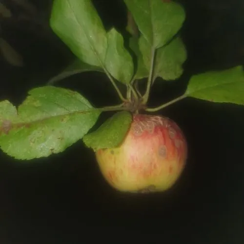

真菌 · 真菌界
苹果黑星菌 Venturia inaequalis

植物病原真菌，菌落橄榄绿至黑色，侵染苹果叶片与果实形成黑星状疮痂，是苹果最重要的病害之一。
- 分类
- 门子囊菌门纲座囊菌纲目黑星菌目科黑星菌科属黑星菌属
- 栖息环境
- 苹果园，以菌丝与假囊壳在落叶中越冬
- 地理分布
- 世界苹果产区广布，中国北方苹果主产区均有发生
- 保护级别
- 暂无评估；作为重要农业病原广泛存在
物种志
苹果黑星菌的菌落生长缓慢，橄榄绿至灰黑色，绒毛状。无性阶段产生分生孢子，孢子倒棍棒形、单胞、橄榄褐色；有性阶段在落叶中形成假囊壳，子囊孢子双胞、大小不等。菌丝在寄主角质层下生长，形成放射状病斑。
苹果黑星菌是苹果专性病原，侵染叶片、果实与嫩梢，病斑初为橄榄绿绒状霉层，后变黑褐色疮痂，果实畸形、开裂，严重时落叶落果，造成大幅减产。它以菌丝或假囊壳在落叶中越冬，春季释放子囊孢子随风雨传播，潮湿凉爽的春季发病最重。防治以清除落叶、合理修剪通风、花期前后喷施保护性杀菌剂为主；抗病品种选育是长期方向。它不感染人。
形态与习性
- 菌落橄榄绿至灰黑色，绒毛状，生长缓慢
- 孢子分生孢子橄榄褐色，子囊孢子双胞
- 寄主苹果的叶片、果实与嫩梢
- 症状叶片与果面黑褐色疮痂，果实畸形开裂
- 传播落叶越冬，春季子囊孢子随风雨传播
- 防治清除落叶、修剪通风、花期喷药
趣味知识
- 苹果黑星病的病斑像撒了一层黑灰，其实是真菌的绒状霉层。
- 病菌在落地的病叶里越冬，春天释放孢子，所以清园扫落叶是防病第一步。
- 果实受害后会畸形开裂，失去商品价值，是苹果产区重点防治对象。
- 它只侵染苹果，不感染人和其他作物，但会造成严重减产。